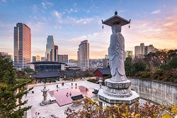

Pałac Gyeongbok Rezydencja królewska znajdująca się w północnej części Seulu, zbudowana pod koniec XIV wieku, zniszczona dwieście lat później, odbudowana w XIX wieku i ponownie zniszczona podczas okupacji japońskiej, obecnie rekonstruowana. |
Pałac Changdeok Rezydencja władców Korei z dynastii Joseon, znajdująca się w aglomeracji Seulu, zbudowana w 1405, odbudowana po inwazji japońskiej w 1610 i częściowo zniszczona podczas okupacji japońskiej 1910–1945, wkomponowana w park o powierzchni pół kilometra kwadratowego. |
Pongŭn sa (봉은사 Klasztor Dobrego Szczęścia) – koreański klasztor w stolicy kraju - Seulu . |
Chogye sa (조계사) Główny klasztor szkoły sŏn największego koreańskiego zakonu chogye. |
Seoul City WallMury twierdzy w Seulu lub dosłownie mury miejskie w Seulu to seria ścian wykonanych z kamienia, drewna i innych materiałów, zbudowanych w celu ochrony miasta Seulu przed najeźdźcami. Mur został zbudowany po raz pierwszy w 1396 roku w celu obrony i pokazania granic miasta otaczającego Hanyang w dynastii Joseon. |
Changgyeong Palace Pałac położony w Seulu w Korei Południowej. Pałac został zbudowany w połowie XV wieku przez króla Sejonga dla jego ojca, Taejong. Pierwotnie nazywał się „Suganggung”, ale został odnowiony i powiększony w 1483 roku przez króla Seongjonga, kiedy to otrzymał swoją obecną nazwę. |
Lotte World TowerCzyli sklep z ubraniami od projektantów z całego świata. Lotte World Tower bywa z tego powodu nazywana światowym ośrodkiem mody. Koreańczycy i turyści cenią sobie także możliwość robienia zakupów w największej w Korei Południowej strefie bezcłowej |
Wieża N Seoul Oficjalnie wieża YTN Seoul i powszechnie znana jako Namsan Tower lub Seoul Tower, to wieża komunikacyjna i widokowa znajdująca się na górze Namsan w centralnej części Seulu w Korei Południowej. Na 236 metrach oznacza drugi najwyższy punkt w Seulu. |
Myeong-dong CathedralKościół katedralny Matki Boskiej Niepokalanego Poczęcia, nieformalnie znany jako Katedra Myeongdong, jest narodową katedrą archidiecezji rzymskokatolickiej w Seulu. |
Gwanghwamun GateGłówna i największa brama Pałacu Gyeongbokgung w Jongno-gu, Seul, Korea Południowa. Znajduje się przy trójkierunkowym skrzyżowaniu na północnym końcu 600-metrowej ulicy Sejongno w śródmieściu Seulu. Stanowiła główny punkt orientacyjny i symbol stolicy za czasów dynastii Joseon. |